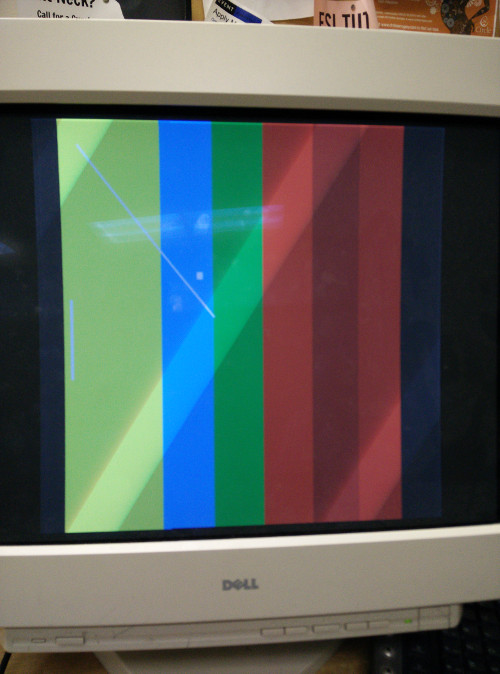
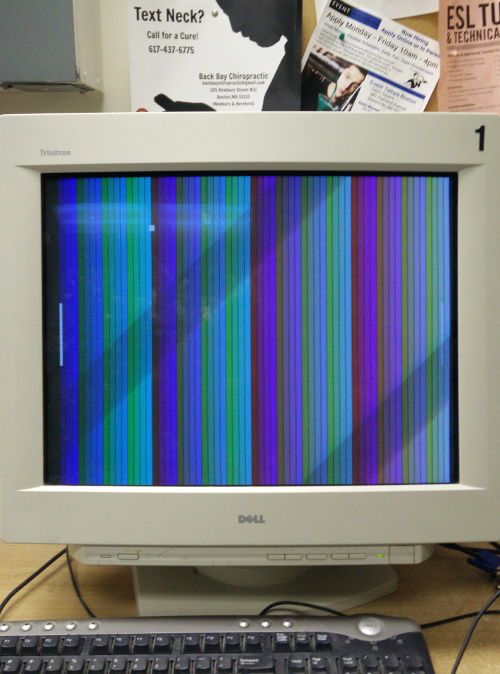

| home |
Probably Not
One of the first projects in many FPGA guides involves displaying an image on a screen. This was also one of the first things I tried when I got my hands on a Basys 2 board. There are some interesting design decisions that went into the VGA specification that clearly indicate that it was designed for analog hardware. After drawing a few red, green and blue rectangles on the screen, I began mixing these colors. Unfortunately,this was cut short after getting 8 colors onto the screen. The reason for this: my vhdl module only had binary control over the red, green and blue channels on the VGA output. This doesn’t seem to be a problem for real graphics adapters: plenty of video cards output True Color(24-bit) for a total of 16 777 216 colors. Well, as I mentioned earlier, VGA was designed as an analog interface. The concept of a digital pixel already existed, but shading the pixel was accomplished by applying a range of voltages over the red, green and blue channels. On various VGA-capable devices, this is accomplished by placing some sort of DAC between the digital outputs of the microcontroller and analog inputs on the VGA port/cable.
FPGAs are intrinsically digital devices. Moreover, I had been using the onboard VGA connector on the Digilent Basys which had no onboard DACs. I could modify the code and add an external circuit for the DACs, resistors and VGA connector. This seemed like an awful amount of work to display a slightly less-abrasive shade of blue. Then I remembered that with PWM, it is possible to output digital signals, that when averaged over some time, appear analog. I wanted to see if I can use this to increase the color depth of the VGA output from my FPGA without any extra circuitry.
Nothing fancy here. I worked off the code for my 3-bit 8colors demo. This original hardware description was designed for a 25mhz clock(very close to the 25.175mhz pixel-clock mandated in the 640x4a80 VGA spec). Of-course to pwm the pixels, I needed a higher-clock rate on my FPGA to enable multiple voltage changes on the RGB channels per pixel. Luckily, I had the ability to switch clock rate on my board to 50mhz or 100mhz. A 50mhz clock would enable me to update pixels 2 times per refresh and 4 times if I use the 100mhz clock. So I switched the jumper to connect the Spartan-3E to the 100mhz clock.
The code required only minor changes.
Instead of switching the active pixel once per clock, I recalculate and increment the pixel coordinate counter only once per 4 clocks.
Also there is a secondary “per-pixel” counter ranging from 0 to 3. This counter
is reset for every new pixel and defines which of the 4 color bits per channel
should currently be output. Instead of doing a fancy conversion from an integer
brightness level to a sequence of binary outputs, I defined
a brightness_selector: std_logic_vector(7 downto 0) := '11110000' and
depending on the desired brightness(range 0 to 3), the per-clock pixel
brightness would be selected as red <- brightness_selector(br+c) where br is
the red brightness(0 to 3 range) and c is the per-pixel counter(0 to 3 range).
Thus, for a desired red brightness of 2(out of 4), on the first two clocks there
will be a 0 output on the red channel. Then for the last two clocks, the output
will be 1. Ideally, it will seem that the pixel is half-lit red.
|  |  |
| Success! 3 nice shades of red being displayed at once on a CRT. | A color ramp displaying all of the newly available 64 possible colors. Bonus PONG overlay |
The VGA spec was designed with CRT displays in mind - three electron guns emitting against phosphor screens with varying brightness. LCD displays use a very different technology involving alignment and re-alignment of crystals. While the voltage across the R G and B channels can be directly transformed to power the Cathode ray guns, translating these voltages to the digital signals that can be used to configure LCD matrices, requires analog to digital conversion - I am sure that if we open up an LCD display, we will find ADC circuitry for this precise task. ADCs generally take samples - therefore, any PWM goes out the window.
Though CRTs have many benefits over LCDs, their size has made their performance on the market decrease with the rise of digital flat-panels. I expect that PWMing the guns also does no favors to color accuracy - I predict that 50% duty cycle does not correspond to an exact 50% brightness. I am interested in finding out what maximum color-bit I could achieve. Right now, I am limited by the available quartz crystal on the dev board. With a 200mhz crystal, I could probably make a 24-bit(TrueColor) color driver with 256 brightness levels per channel. It may even be possible to achieve 30-bit(1024 shades per channel) or 36-bit(4096 shades per channel) color.